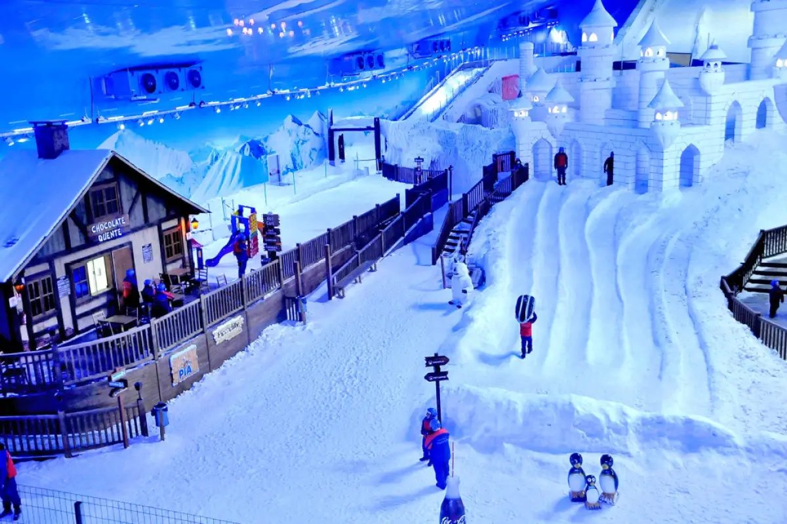

 Um programa imperdível para quem vem a Gramado é o Snowland. Você deve reservar ao menos um dia para conhecer e aproveitar o primeiro parque de neve indoor das Américas. A poucos minutos do Centro, o local oferece muitas opções de entretenimento para toda família em uma área de 16 mil m². Quem já conhece a neve pode reviver essa magia no Snowland, e quem ainda não conhece tem a oportunidade de brincar e registrar momentos inesquecíveis em uma majestosa montanha com neve o ano todo. No Snowland a diversão foi pensada para todas as idades. São mais de 10 atrações para toda a família, combinando esportes e brincadeiras, gastronomia e compras. Veja o que você vai encontrar em cada uma delas:
Vilajero Alpino – Patinar no gelo, fazer compras ou um lanche, brincar no simulador, levar uma foto como lembrança, tudo isso em um cenário que lembra os Alpes Suíços. No Vilajero Alpino a pista de patinação no gelo é disputada por adultos e crianças que tentam se equilibrar e se divertir!. No Simulador 7 D você pode sentir a emoção do esqui na neve. No espaço Escavação Arqueológica você vai encontrar um cenário divertido para fotos. Aproveite para conferir também as opções gastronômicas como o pub da montanha, lojas com algumas das principais marcas de Gramado, além da loja de souvenirs do Snowland
Mirante Bela Vista – Com uma vista privilegiada da montanha de neve, você pode pedir a bebida da sua preferência enquanto assiste o movimento de quem está curtindo o esqui e o snowboard na montanha de neve. No cinema 7D a diversão fica por conta de uma história engraçada que vai surpreendê-lo com várias sensações durante o filme. No Ice Game as crianças brincam no fliperama com jogos para todas as idades. Na Praça de Alimentação você pode escolher lanches e bebidas enquanto curte a vista da montanha. No Ice Kids os pequenos podem se divertir no castelo de bolinhas, com o jogo da memória, o mini labirinto e o teatrinho. Este espaço conta ainda com recreação e cenário fotográfico.
Montanha de Neve – Aqui você brinca e se diverte em um espaço com temperaturas entre -5C° e -3C°, mas atenção, para entrar é preciso ter no mínimo 2 anos. No tubing a diversão acontece em uma grande bóia em que adultos e crianças descem a montanha de neve. Para brincar no tubing é preciso ter no mínimo 7 anos de idade. Já no Snowplay são as crianças de 4 a 10 anos que aproveitam o Mini-Tubing. Ao chegar na Oficina do Tio Urso é o momento de fazer uma foto temática para levar como lembrança. No parador Hot Café você pode saborear um chocolate quente ou um café especial. Na Escola de Neve você aprende e pratica esqui e ou snowboard na primeira escola de neve do Brasil. E na Caverna do Yeti o Pé Grande que vive na montanha de neve está à espera da garotada para muitas fotos. No Snowland a diversão é garantida independente do clima, pois a área é toda coberta. Então programe-se e aproveite muito!!